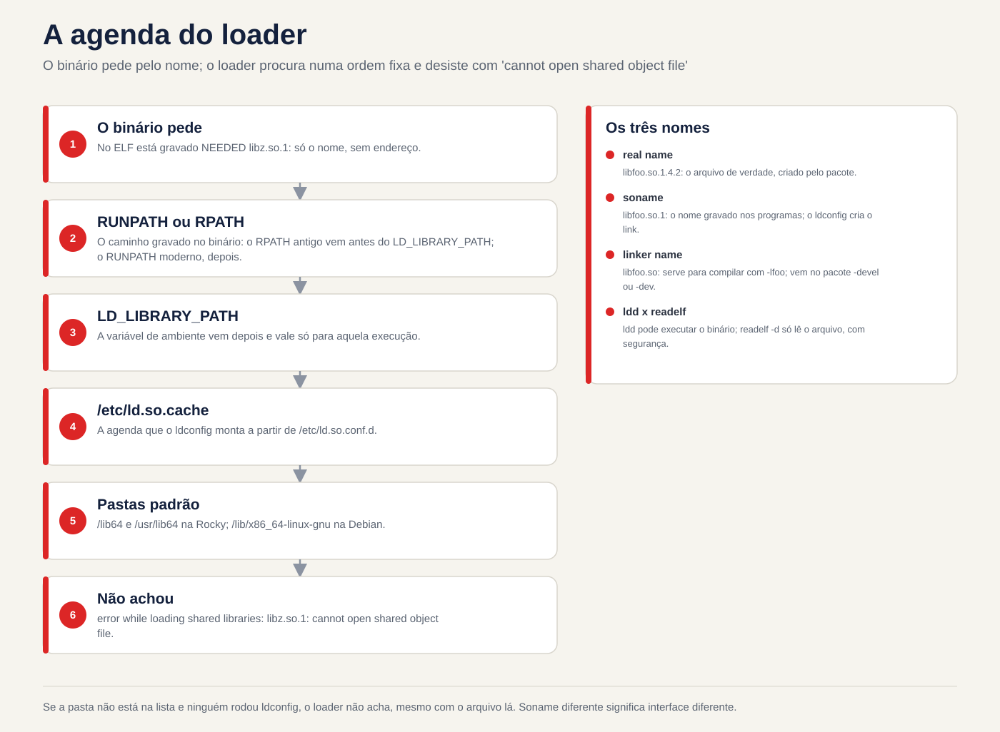

Lezione 6.5 · Librerie condivise
Quasi nessun programma Linux funziona da solo. ls, sshd e dnf caricano, quando vengono eseguiti, le librerie che si trovano in altri file: libc, libssl, libz. Quando uno di essi manca, è nella cartella sbagliata o ha la versione sbagliata, appare il messaggio che ogni amministratore di sistema ha visto: error while loading shared libraries. Questa lezione ti insegna come leggere questo messaggio e risolverlo nel modo giusto. Alla fine arriva la M6 Challenge.
Centro di questa lezione: comprendere i tre nomi di una libreria (nome reale, soname, nome del linker); visualizzare le dipendenze di un programma con
lddereadelf; sapere dove sta guardando il caricatore; registrare una nuova cartella con/etc/ld.so.conf.deldconfig; e sapere perchéLD_LIBRARY_PATHe il collegamento simbolico improvvisato sono patch. Il resto è approfondito.
| File | |
|---|---|
| Modulo | M6 · Software, lezione 5 di 5, con il modulo Challenge |
| Quando | Settimana 11. La sfida può svolgersi alla fine della settimana o nella settimana 12 |
| Alla fine | Diagnostichi e risolvi la libreria che non si carica, senza soluzioni alternative |
| Articoli di prova | LPIC-1 102.3 (gestione librerie condivise): ldd, ldconfig, /etc/ld.so.conf, LD_LIBRARY_PATH. Alla RHCSA non è un obiettivo diretto, ma appare quando qualcosa non va |
| Prerequisiti | lezioni da 6.1 a 6.3 |
| Ora | circa 2 ore, più 2-3 ore per la sfida |
| Istantanee | m6a5-inicio e m6a5-fim presso Rocky-Lab. debian-lab viene letto solo |
1 · Riscaldamento
Rispondere prima di leggere.
- Se qualcuno cancella il
libc.so.6, cosa succede alls? E conrmcosa utilizzeresti per risolverlo? - Perché la stessa libreria appare con tre nomi, ad esempio
libz.so,libz.so.1elibz.so.1.2.13? - Hai copiato una libreria in
/opt/app/libe il programma continua a dire che non riesce a trovarla. Perché?
2 · Perché è importante
| Il cosiddetto | La risposta sbagliata | Cosa provoca |
|---|---|---|
"L'app del fornitore richiede libssl.so.1.1 e Rocky 9 ne ha solo 3" | ln -s libssl.so.3 libssl.so.1.1 | L'app si avvia e poi si arresta in modo anomalo o corrompe i dati. L'interfaccia è cambiata |
| "Ho installato la libreria e il programma non riesce a trovarla" | export LD_LIBRARY_PATH=... in /etc/profile | Si applica a tutti, tranne ai servizi systemd. Ed è possibile modificare la libreria di altri programmi |
| "Funziona sul mio terminale e non funziona come servizio" | Riavvia finché non funziona | La tua shell ha una variabile che il servizio non ha |
| "Ho aggiornato OpenSSL a causa di una falla di sicurezza" | Pensare che sia finita | I servizi già in esecuzione continuano con la vecchia versione in memoria fino al riavvio |
3 · Modello mentale
Il programma è una lista degli ospiti: nel binario dice "Ho bisogno di
libz.so.1elibc.so.6", solo il nome, nessun indirizzo. La persona che li cerca è il loader (ld-linux), e cerca in un ordine fisso. La sua agenda è/etc/ld.so.cache, cheldconfigraccoglie dall'elenco delle cartelle in/etc/ld.so.conf.d. Se la cartella non è nell'elenco e nessuno ha aggiornato il calendario, il caricatore non la trova, anche con il file lì.
./programa
│ o kernel lê o ELF: "interpretador: /lib64/ld-linux-x86-64.so.2"
▼
ld-linux (o loader)
│ para cada NEEDED gravado no binário (ex.: libz.so.1):
├─ 1. RUNPATH/RPATH gravado no próprio binário
├─ 2. LD_LIBRARY_PATH (variável de ambiente)
├─ 3. /etc/ld.so.cache ← o ldconfig gera a partir de /etc/ld.so.conf(.d)
└─ 4. pastas padrão: /lib64 e /usr/lib64 (Rocky)
/lib/x86_64-linux-gnu e /usr/lib/x86_64-linux-gnu (Debian)
▼
não achou → "error while loading shared libraries: libz.so.1:
cannot open shared object file: No such file or directory"Il dettaglio preciso: il vecchio RPATH viene prima di LD_LIBRARY_PATH e il moderno RUNPATH viene dopo. Per l'uso quotidiano, l'ordine di disegno è sufficiente.


4 · Gli elementi essenziali
I tre nomi
| Nome | Esempio | Cos'è | Chi crea |
|---|---|---|---|
| Nome vero | libz.so.1.2.13 | Il file vero e proprio, con la versione completa | Il pacchetto (zlib / zlib1g) |
| Sonome | libz.so.1 | Collegamento simbolico al nome reale. È il nome che viene registrato nei programmi. Cambia solo quando l'interfaccia si interrompe | ldconfig (e il pacchetto) |
| Nome del link | libz.so | Link simbolico utilizzato solo per la compilazione (-lz) | Il pacchetto di sviluppo (zlib-devel / zlib1g-dev) |
La regola che spiega tutto: stesso soname, interfaccia compatibile. libz.so.1.2.13 e libz.so.1.3.1 hanno lo stesso soname libz.so.1, quindi qualsiasi programma scritto per l'uno usa l'altro. Un libz.so.2 sarebbe un'altra interfaccia, mentre i vecchi programmi chiederebbero ancora .so.1.
Comandi
| Voglio... | Comando |
|---|---|
| Scopri di quali librerie ha bisogno un programma e dove si trovano | ldd /usr/bin/ssh |
| Vedi solo ciò che è registrato nel binario, senza eseguire nulla | readelf -d /usr/bin/ssh | grep -E 'NEEDED|RUNPATH|RPATH' |
| Visualizza la pianificazione del caricatore | ldconfig -p | grep libz |
| Aggiorna il calendario e i collegamenti simbolici di soname | sudo ldconfig |
| Visualizza cartelle aggiuntive | cat /etc/ld.so.conf e ls /etc/ld.so.conf.d/ |
| Registra una nuova cartella | echo /opt/app/lib | sudo tee /etc/ld.so.conf.d/app.conf e sudo ldconfig |
| Prova con una cartella solo per questo comando | LD_LIBRARY_PATH=/opt/app/lib ./programa |
| Guarda la ricerca del caricatore, passo dopo passo | LD_DEBUG=libs ./programa |
| Scopri il pacchetto che possiede una lib | rpm -qf /usr/lib64/libz.so.1 / dpkg -S libz.so.1 |
| Scopri quale pacchetto fornisce una lib | mancante dnf provides 'libz.so.1()(64bit)' / apt-file search libz.so.1 |
| Visualizza i servizi utilizzando la vecchia lib dopo un aggiornamento | sudo dnf needs-restarting -s / sudo needrestart (Debian, pacchetto needrestart) |
Fai attenzione a ldd: in un binario sconosciuto, potrebbe finire per eseguire codice dal binario stesso. Per i programmi che non conosci, usa readelf -d o objdump -p, che leggono solo.
Rocky × Debian
| Roccioso | Debian | |
|---|---|---|
| Cartelle standard (64 bit) | /lib64, /usr/lib64 | /lib/x86_64-linux-gnu, /usr/lib/x86_64-linux-gnu (multiarcata) |
| Nome del pacchetto Lib | zlib, openssl-libs | zlib1g, libssl3 (il soname va nel nome) |
| Pacchetto da compilare | -devel (zlib-devel) | -dev (zlib1g-dev) |
Chi esegue ldconfig durante l'installazione | L'rpm (trigger del file) stesso | trigger dpkg |
| Trova chi fornisce | dnf provides 'libX.so.N()(64bit)' | apt-file search libX.so.N |
| Servizi con la vecchia lib | dnf needs-restarting -s | needrestart |
In Rocky, /lib64 è un collegamento simbolico a /usr/lib64. Nella Debian moderna, /lib è un collegamento simbolico a /usr/lib. In entrambi, la cartella "reale" è quella in /usr.
Che rientra nel test. In LPIC-1: a cosa servono ldd e ldconfig, cosa c'è in /etc/ld.so.conf e /etc/ld.so.conf.d/, che /etc/ld.so.cache è binario (non viene modificato, viene rigenerato) e cosa fa LD_LIBRARY_PATH. Imparare a leggere l'output di ldd con not found.
5 · Laboratorio guidato
Creerai una libreria di giocattoli, libola, e ne interromperai e correggerai il caricamento in diversi modi.
Passaggio 0 · Istantanea, cartella e compilatore. In Proxmox: qm snapshot 201 m6a5-inicio. Su Rocky-Lab:
sudo dnf install -y gcc
mkdir -p ~/lab65 && cd ~/lab65Passaggio 1 · Guarda un programma reale.
ldd /usr/bin/ls
readelf -d /usr/bin/ls | grep NEEDED
ls -l /usr/lib64/libz.so*
rpm -qf /usr/lib64/libz.so.1
ldconfig -p | grep libz
cat /etc/ld.so.conf
ls /etc/ld.so.conf.d/readelf mostra solo i nomi (sonames). ldd mostra anche dove è stato ritrovato ciascuno. In ls -l notare la catena di collegamenti simbolici: libz.so.1 punta al nome reale. libz.so (nome del linker) esiste solo se è installato zlib-devel.
Passaggio 2 · Creare la libreria e un programma che la utilizzi.
cat > ola.c <<'EOF'
#include <stdio.h>
void ola(void) { puts("ola da biblioteca v1"); }
EOF
cat > main.c <<'EOF'
void ola(void);
int main(void) { ola(); return 0; }
EOF
gcc -fPIC -shared -Wl,-soname,libola.so.1 -o libola.so.1.0 ola.c
ln -s libola.so.1.0 libola.so
gcc -o app main.c -L. -lola
./app-Wl,-soname,libola.so.1 scrive il soname all'interno della lib. ln -s crea il nome del linker, che gcc -lola usa per compilare. E ./app fallisce: error while loading shared libraries: libola.so.1: cannot open shared object file.
Passaggio 3 · Diagnosi e test senza installazione.
ldd ./app | grep ola
readelf -d app | grep NEEDED
ls -l
LD_LIBRARY_PATH=. ./app
ldconfig -n .
ls -l
LD_LIBRARY_PATH=. ./appldd mostra libola.so.1 => not found. Il binario richiede libola.so.1 (il soname), non libola.so.1.0 né libola.so. Ecco perché il primo LD_LIBRARY_PATH=. ancora fallisce: non c'è nessun file con quel nome nella cartella. ldconfig -n . crea il collegamento simbolico soname solo in questa cartella, senza modificare il calendario di sistema. Ora il test funziona. Ma si applica solo a questo comando.
Passaggio 4 · Installare nel modo giusto.
sudo mkdir -p /opt/ola/lib
sudo cp libola.so.1.0 /opt/ola/lib/
./app
echo /opt/ola/lib | sudo tee /etc/ld.so.conf.d/ola.conf
sudo ldconfig
ls -l /opt/ola/lib
ldconfig -p | grep ola
ldd ./app | grep ola
./appIl primo ./app continua a fallire: il file è lì, ma la cartella non è nella directory. Dopo ldconfig sono cambiate due cose: l'agenda conosce la cartella e ldconfig ha creato da solo il collegamento simbolico libola.so.1 -> libola.so.1.0.
Passaggio 5 · Versioni: compatibili e incompatibili.
sed 's/v1/v1.1/' ola.c > ola11.c
gcc -fPIC -shared -Wl,-soname,libola.so.1 -o libola.so.1.1 ola11.c
sudo cp libola.so.1.1 /opt/ola/lib/
sudo ldconfig
ls -l /opt/ola/lib
./appStesso nome, versione superiore: ldconfig ha passato il collegamento simbolico libola.so.1 a 1.1 e app usa quello nuovo senza ricompilare. Così una correzione di sicurezza nel openssl-libs raggiunge tutti i programmi contemporaneamente.
sed 's/v1/v2/' ola.c > ola2.c
gcc -fPIC -shared -Wl,-soname,libola.so.2 -o libola.so.2.0 ola2.c
sudo cp libola.so.2.0 /opt/ola/lib/
sudo ldconfig
ls -l /opt/ola/lib
ldconfig -p | grep ola
./appNuovo Soname, nuova interfaccia: ora ci sono libola.so.1 e libola.so.2 fianco a fianco, e il vecchio app continua con 1.1. Solo un programma appena compilato, rispetto a .so.2, utilizzerebbe la versione 2. Ecco perché Rocky 9 può avere libssl.so.3 e, in un pacchetto di compatibilità, libssl.so.1.1 contemporaneamente.
Passo 6 · RUNPATH: il binario che indica dove cercare.
gcc -o app-local main.c -L. -lola -Wl,-rpath,'$ORIGIN'
readelf -d app-local | grep -E 'NEEDED|RUNPATH'
./app-local
./appIl $ORIGIN significa "la cartella in cui si trova il binario". app-local trova il libola.so.1 del ~/lab65 (v1) prima di consultare l'ordine del giorno, mentre il app utilizza il 1.1 del sistema. Molte app dei fornitori in /opt sono così, con le proprie librerie a fianco.
Passaggio 7 · debian-lab, sola lettura.
ldd /usr/bin/ls
ls -l /usr/lib/x86_64-linux-gnu/libz.so*
dpkg -S libz.so.1
cat /etc/ld.so.conf.d/*.confStessa idea, cartella multiarch diversa. Il pacchetto si chiama zlib1g: 1 è il soname.
Non cancellare ancora. La sezione 6 interrompe l'uso di /opt/ola. La pulizia arriva alla fine.
Decidi 1
Un'app del fornitore in /opt/vendor non va su in Rocky 9: libssl.so.1.1: cannot open shared object file. Rocky 9 ha libssl.so.3. Cosa fai?
A) ln -s /usr/lib64/libssl.so.3 /usr/lib64/libssl.so.1.1. B) Installa il pacchetto di compatibilità della distribuzione (dnf provides 'libssl.so.1.1()(64bit)', in Rocky 9 è compat-openssl11) e addebita al fornitore una versione per OpenSSL 3. C) Scarica un libssl.so.1.1 da qualsiasi sito Web e gioca in /usr/lib64.
Verifica prima un'opzione.
| Se hai selezionato | Risultato | Perché |
|---|---|---|
| A | Sale e poi cade, o peggio, funziona male | Soname diverso significa interfaccia diversa. Il collegamento simbolico inganna il caricatore, non il codice |
| B | Giusto | Lib con il soname giusto, firmato, aggiornato da dnf, e il vero problema (vecchia app) è registrato |
| C | Peggio ancora | Libreria di crittografia di origine sconosciuta, attualmente non aggiornata |
Per risolvere: quando manca un soname, cercare chi fornisce quel soname. Non puntare mai un soname a un altro.
Decidi 2
L'app in /opt/app porta in /opt/app/lib le proprie copie di diverse librerie, inclusa una libcrypto.so.3 più vecchia di quella di sistema. Un collega lo ha risolto con export LD_LIBRARY_PATH=/opt/app/lib in /etc/profile. L'app viene eseguita come servizio systemd. Cosa fai?
A) Lascialo così com'è, ha funzionato. B) Scambiare /etc/ld.so.conf.d/app.conf con /opt/app/lib e ruotare ldconfig. C) Rimuovilo da /etc/profile e posiziona la variabile solo nel servizio: Environment=LD_LIBRARY_PATH=/opt/app/lib nell'unità (o uno script che esporta e chiama l'app).
Verifica prima un'opzione.
| Se hai selezionato | Risultato | Perché |
|---|---|---|
| A | Sbagliato due volte | /etc/profile si applica ai login, non al servizio. E ogni programma che apri nella shell inizia con il vecchio libcrypto dell'app |
| B | Pericoloso qui | Le cartelle ld.so.conf.d entrano nell'agenda prima delle cartelle standard. L'intero sistema, compresi sshd e dnf, passerebbe al vecchio libcrypto |
| C | Giusto | Solo l'app vede le sue librerie |
Per risolvere: ld.so.conf.d è per la cartella con librerie che esistono solo lì. La cartella con le copie delle librerie di sistema è limitata all'app che ne ha bisogno.
6 · Interruzione e correzione
Interruzione 1 · Pianificazione non aggiornata

*Se a pasta não está na lista e ninguém rodou ldconfig, o loader não acha, mesmo com o arquivo lá.*
sudo rm /opt/ola/lib/libola.so.1
./app
ldconfig -p | grep olaSintomo: cannot open shared object file, sebbene libola.so.1.1 sia presente.
Diagnosi: la pianificazione dice ancora che libola.so.1 è in /opt/ola/lib, ma ls -l /opt/ola/lib mostra che il collegamento simbolico soname è andato. Il caricatore cerca il soname, non il file con versione.
Correzione: sudo ldconfig. Ricrea il collegamento simbolico e il calendario. Verificare con ls -l e ./app.
Nella vita reale: accade quando qualcuno copia una lib a mano o uno script di installazione elimina e ricopia i file. Ogni volta che si modifica la lib all'esterno del gestore pacchetti: sudo ldconfig.
Interruzione 2 · La libreria impostore
mkdir -p ~/lab65/falsa
sed 's/v1/IMPOSTORA/' ~/lab65/ola.c > ~/lab65/falsa.c
gcc -fPIC -shared -Wl,-soname,libola.so.1 -o ~/lab65/falsa/libola.so.1 ~/lab65/falsa.c
export LD_LIBRARY_PATH=~/lab65/falsa
./app
ldd ./app | grep ola
sudo ./app
unset LD_LIBRARY_PATH
./appSintomo: app stampa IMPOSTORA. Con sudo si torna alla normalità.
Diagnosi: echo $LD_LIBRARY_PATH e ldd ./app mostrano la lib proveniente da ~/lab65/falsa. La variabile va davanti alla pianificazione.
Fix: unset LD_LIBRARY_PATH e cerca dove è stata definita (~/.bashrc, /etc/profile.d/, /etc/environment).
Nella vita reale: ecco perché sudo cancella l'ambiente e perché i programmi setuid ignorano LD_LIBRARY_PATH. Se fosse valido per root, qualsiasi utente scambierebbe libc di passwd con uno dei suoi.
Pausa 3 · Hanno rimosso una lib dal sistema (narrativa)
Qualcuno ha eseguito rpm -e --nodeps openssl-libs per una "reinstallazione pulita". Al momento giusto, ssh, curl e dnf si fermano con libcrypto.so.3: cannot open shared object file. dnf non può essere reinstallato perché necessita della lib.
Diagnosi: ldd /usr/bin/curl | grep 'not found' e rpm -V openssl-libs.
Fix: se rpm funziona ancora, rpm -ivh dal pacchetto preso dall'ISO (a questo serve il repository ISO della lezione 6.3). Se non funziona nemmeno, avvia dall'ISO in modalità salvataggio e rpm --root=/mnt/sysroot -ivh ....
Per risolvere: --nodeps disattiva esattamente la protezione che impedisce ciò. Non è quasi mai la risposta.
Cleanup
unset LD_LIBRARY_PATH
sudo rm /etc/ld.so.conf.d/ola.conf
sudo rm -r /opt/ola
sudo ldconfig
ldconfig -p | grep olaL'ultimo comando non dovrebbe mostrare nulla. La cartella ~/lab65 può rimanere.
7 · Insidie
| Trappola | Cosa succede | Come evitare |
|---|---|---|
Collegamento simbolico da un nome all'altro (.so.1.1 → .so.3) | Fallisce subito, o peggio, più tardi e silenziosamente | Cerca chi fornisce il soname corretto (dnf provides, apt-file) |
LD_LIBRARY_PATH globale in /etc/profile | Cambia la libreria di ogni programma nella shell e non si applica ai servizi | Basta inserirlo nel servizio (Environment=) o in uno script wrapper |
Cartella con copie delle librerie di sistema in ld.so.conf.d | L'intero sistema ora utilizza le copie | Utilizzare ld.so.conf.d solo per le librerie che esistono solo lì |
Copia la lib e dimentica ldconfig | Nessun collegamento simbolico soname e vecchio diario | Sempre sudo ldconfig dopo aver modificato la lib all'esterno del manager |
ldd in binario sconosciuto | Il binario può eseguire il codice | Utilizzare readelf -d o objdump -p |
| Aggiorna una libreria e non riavviare nulla | I servizi continuano con la versione vulnerabile in memoria | dnf needs-restarting -s / needrestart e riavviare |
rpm -e --nodeps in una lib | Fa crollare tutto ciò che dipende da esso, a volte anche dnf | Non usare mai --nodeps nella lib. Utilizzare dnf reinstall o dnf swap |
| Scopri che il caricatore cerca nella cartella corrente | ./app non trova la lib accanto | Ciò accade solo con RUNPATH $ORIGIN o LD_LIBRARY_PATH |
Modifica /etc/ld.so.cache | È binario, hai corrotto il file | Modifica ld.so.conf.d ed esegui ldconfig |
8 · Quiz
Rispondi senza guardare. Il foglio delle risposte si trova alla fine della lezione.
- Qual è la differenza tra nome reale, soname e nome del linker? Chi li crea?
- Hai installato una lib in
/opt/x/libe il programma non riesce a trovarla. Nomina un modo temporaneo e due permanenti per risolverlo. - Perché non eseguire
lddsu un binario proveniente dall'esterno? Cosa usare invece? - Una vecchia app richiede
libfoo.so.1e il sistema halibfoo.so.2. Perché il collegamento simbolico è una cattiva idea? - Il programma funziona nel tuo terminale e fallisce se eseguito come servizio systemd. Chi è il sospettato numero uno?
- Quale file elenca le directory aggiuntive che ldconfig scansiona per le librerie condivise? a) /etc/ld.so.cache b) /etc/ld.so.conf c) /etc/ldconfig.conf d) /etc/ld.so.preload
9 · Cola
Da sapere a memoria:
| Voglio... | Comando |
|---|---|
| Dipendenze di un programma | ldd PROGRAMA |
| Cosa viene registrato nel binario | readelf -d PROGRAMA | grep -E 'NEEDED|RUNPATH' |
| Programma di caricamento | ldconfig -p | grep NOME |
| Rigenera calendario e collegamenti simbolici | sudo ldconfig |
| Cartella Registra | echo /opt/x/lib | sudo tee /etc/ld.so.conf.d/x.conf e sudo ldconfig |
| Prova puntuale | LD_LIBRARY_PATH=/opt/x/lib ./programa |
Da consultare:
| Voglio... | Comando |
|---|---|
| Caricatore passo dopo passo | LD_DEBUG=libs ./programa |
| Pacchetto proprietario Lib | rpm -qf ARQUIVO / dpkg -S ARQUIVO |
| Chi fornisce il soname | dnf provides 'libX.so.N()(64bit)' / apt-file search libX.so.N |
| Servizi con la vecchia lib | sudo dnf needs-restarting -s / sudo needrestart |
| Processi con lib eliminati | sudo lsof -n 2>/dev/null | grep 'DEL.*\.so' |
| Collegamenti simbolici solo in una cartella | ldconfig -n PASTA |
| Leggi ELF senza eseguire | objdump -p PROGRAMA |
| Forza le librerie precaricate | cat /etc/ld.so.preload (normalmente non esiste) |
| File di configurazione | /etc/ld.so.conf, /etc/ld.so.conf.d/*.conf, /etc/ld.so.cache |
Flashcard:
- Soname → il nome registrato nel programma. Cambia solo quando l'interfaccia si rompe.
- Ordine del caricatore → RUNPATH/RPATH, LD_LIBRARY_PATH, cache, cartelle predefinite.
- Modificata manualmente la lib →
sudo ldconfig. - Manca
libX.so.N→ chi fornisce questo soname? Non creare mai collegamenti simbolici a un altro. - Aggiornata la lib → riavvia i servizi che la utilizzano.
10 · Checklist e chiusura
- [ ] Spiego nome reale, soname e nome del linker
- [ ] Leggo un output da
ldde trovonot found - [ ] Registro una cartella con
ld.so.conf.deldconfig - [ ] So perché
LD_LIBRARY_PATHè per testing e non per il sistema - [ ] Spiego perché la stessa lib con lo stesso soname aggiorna tutti senza ricompilare
- [ ] So come trovare chi fornisce un soname mancante, in entrambe le distribuzioni
- [ ] So come trovare i servizi che usano ancora una lib vecchia
Ultimo esercizio, senza guardare nella lezione: in ~/lab65/final, creare un libtchau.so.1.0 con soname libtchau.so.1 e un programma che lo utilizzi. Far eseguire il programma senza LD_LIBRARY_PATH e senza ld.so.conf.d. Suggerimento: Passaggio 6. Quindi spiegare perché ha funzionato.
Riavvio e conferenza:
sudo reboot
ldconfig -p | grep -c ola
ls /etc/ld.so.conf.d/
echo "[$LD_LIBRARY_PATH]"
sudo dnf checkPrevisto: 0, no ola.conf e la variabile vuota ([]).
Fine istantanea (in Proxmox):
qm snapshot 201 m6a5-fim11 · Nella vita reale
Missione, sola lettura. Su un server Linux amministrato da te (o con autorizzazione), esegui solo:
cat /etc/ld.so.conf
cat /etc/ld.so.conf.d/*.conf
ldconfig -p | wc -l
ls -l /etc/ld.so.preload 2>/dev/null
grep -rs LD_LIBRARY_PATH /etc/profile /etc/profile.d/ /etc/environment /etc/systemd/system/
sudo dnf needs-restarting -s 2>/dev/null || sudo needrestart -b 2>/dev/nullQuestions per rispondere:
- Quali cartelle aggiuntive sono registrate e da quale pacchetto o app proviene ciascuna?
- Qualcuno di loro ha copie delle librerie di sistema (
libssl,libcrypto,libz)? Verificare conls. - C'è
/etc/ld.so.preload? Su un server comune non dovrebbe esistere. Se esiste e non sai da dove viene, dovresti indagare: è un classico posto per rootkit. - Qualcuno usa
LD_LIBRARY_PATHa livello globale o in un'unità? - Ci sono servizi che devono essere riavviati dopo l'ultimo aggiornamento?
Journal: annota la risposta di 5. Se sono presenti servizi in sospeso, questa diventa un'attività di manutenzione pianificata. Non riavviare nulla adesso.
Domani, senza guardare: scrivi l'ordine di ricerca del caricatore e i due comandi per registrare una nuova cartella.
12 · Scava più a fondo quando vuoi
man ld.soeman ldconfig: l'ordine esatto di ricerca, RPATH × RUNPATH e la modalità sicura dei programmi setuid.LD_PRELOADe/etc/ld.so.preload: caricare prima una lib. Viene utilizzato per il debug e anche dai malware.- Versione dei simboli: l'errore
version `GLIBC_2.34' not foundappare quando si trasferisce un binario da un nuovo sistema a uno vecchio. - Statico × dinamico: perché Go genera binari quasi statici e perché la distribuzione preferisce quelli dinamici (una correzione vale per tutti).
patchelf: cambia il RUNPATH di un binario pronto.lddtree(pacchettopax-utils): l'intero albero delle dipendenze, senza eseguire il binario.
DeepTutor (http://10.1.0.149:3782, KB "Linux Sysadmin Course"):
!explica a ordem em que o ld-linux procura bibliotecas!feynman o que é um soname e por que ele existe!quiz Aula 6.5, 5 perguntas sobre ldd e ldconfig para a LPIC-1
M6 Challenge · Offline installazione
La missione: Rocky-Lab installa i pacchetti senza internet, utilizzando solo l'ISO come repository, e continua così dopo il riavvio.
Nella lezione 6.3 hai assemblato manualmente l'ISO e creato un repository temporaneo. Ora il risultato deve essere permanente e il riavvio è ciò che lo controlla. Non esiste un passo dopo l'altro. I suggerimenti sono nella chiave di risposta, ma prova prima senza.
Prima di iniziare:
- Controlla che l'ISO allegato alla VM sia DVD (
Rocky-9.x-x86_64-dvd.iso), non quello minimo. Minimal ha pochi pacchetti. Test:dnf --repo=iso-appstream list --available | wc -l. - Sostenere
qm snapshot 201 m6-desafio-inicio.
Requisiti:
- L'ISO si monta da solo in
/mnt/isoall'avvio, fino a/etc/fstab, in sola lettura. Se l'ISO non è collegato, l'avvio non può bloccarsi. - Un file
/etc/yum.repos.d/local-iso.repocon i repository BaseOS e AppStream dell'ISO, congpgcheck=1e la chiave destra. - Tutti i repository di rete permanentemente disattivati: baseos, appstream, extras, crb, epel e tutti gli altri visualizzati.
--disablereponon è valido sulla riga di comando. - Nessuna connessione Internet reale durante il test:
sudo ip route del default(ritorna al riavvio). - Installare un pacchetto BaseOS (ad esempio
zsh) e un pacchetto AppStream (ad esempiogit) che non siano già installati. sudo dnf check-updateesudo dnf makecacheterminano rapidamente e senza errori, senza tentare Internet.
Criteri di accettazione (dopo un sudo reboot):
findmnt /mnt/iso
dnf repolist
sudo ip route del default
sudo dnf makecache
sudo dnf install -y zsh git
rpm -q zsh git
sudo dnf check-update; echo "saida=$?"- [ ]
findmntmostra l'ISO in/mnt/iso, conro - [ ]
dnf repolistmostra solo i due repository da ISO - [ ] Installati entrambi i pacchetti con il percorso predefinito rimosso
- [ ]
check-updatetermina in pochi secondi (output0o100, senza errore di rete) - [ ] Con l'ISO scollegato (
qm set 201 --ide2 none,media=cdrom), la VM si avvia ancora
Bonus (opzionale):
- Proprio repository: unisci alcuni
.rpmin/srv/repo-local, genera i metadati concreaterepo_c(installa il pacchetto prima di tagliare la rete) e crea un.repoper esso. Hai appena creato un mini mirror. - Debian: in debian-lab, fai l'equivalente con Debian ISO DVD 1 e
apt-cdrom add, o con una linea.sourcesche punta afile:/mnt/iso.
Una volta terminato: qm snapshot 201 m6-desafio-fim. I moduli successivi richiedono Internet. Ritorno allo stato normale con qm rollback 201 m6a5-fim. L'istantanea della sfida viene salvata come prova.
Hai chiuso M6. Ora installi, consulti, verifichi e rimuovi pacchetti in entrambe le famiglie, sposti repository, usi Flatpak e risolvi le librerie che non si caricano. Il modulo successivo si trova nella scheda Piano.
Foglio di risposte commentate
Riscaldamento
- Quasi tutto si ferma.
ls,rm,bashednfdipendono dalibc.so.6. Qualsiasi nuovo comando non viene caricato. Continuano solo i built-in della shell già aperta (echo,cd). Il modo è avviare dall'ISO in modalità ripristino e reinstallareglibcconrpm --root. È l'esempio più estremo di Break 3. - Ogni nome ha una funzione.
libz.so.1.2.13è il file (nome reale).libz.so.1è il nome del soname richiesto dai programmi.libz.soè il nome del linker, utilizzato solo dal compilatore. - La cartella non è nell'agenda del caricatore. Non esegue la scansione del disco, consulta
/etc/ld.so.cachee le cartelle predefinite. O registri la cartella (ld.so.conf.d+ldconfig), oppure il binario ha RUNPATH, oppure usiLD_LIBRARY_PATHsolo per quel programma. E controlla se il file con il nome soname esiste lì.
Quiz
- Il vero nome (
libfoo.so.1.4.2) è il file e il pacchetto viene creato. Il soname (libfoo.so.1) è il collegamento simbolico con il nome che viene registrato nei programmi;ldconfig(e il pacchetto) lo crea. Il nome del linker (libfoo.so) viene utilizzato per compilare con-lfooed è disponibile nel pacchetto-develo-dev. - Temporaneo:
LD_LIBRARY_PATH=/opt/x/lib ./programa. Permanente: un file in/etc/ld.so.conf.d/piùsudo ldconfig, oppure il binario compilato con RUNPATH (-Wl,-rpath,..., opatchelfin un binario pronto). In un servizio,Environment=LD_LIBRARY_PATH=si applica anche all'unità. - Perché
lddpotrebbe finire per eseguire il binario per scoprire le dipendenze e un binario dannoso ne trae vantaggio. Utilizzarereadelf -doobjdump -p, che leggono solo il file. - Perché un soname diverso significa un'interfaccia diversa: funzioni che hanno cambiato firma o sono scomparse. Il caricatore accetta il collegamento simbolico, ma il programma richiama cose che non esistono più o che funzionano in un altro modo. La cosa giusta da fare è installare la lib con soname
.so.1(pacchetto di compatibilità) o aggiornare l'app. - Il
LD_LIBRARY_PATH(o altra variabile) definita nel tuo~/.bashrco/etc/profile. systemd non legge questi file. Verificare consystemctl show SERVICO -p Environmentejournalctl -u SERVICO. - b)
/etc/ld.so.conf(che in Rocky e Debian include solo/etc/ld.so.conf.d/*.conf). a) è l'agenda binaria che generaldconfig. c) non esiste. d) è l'elenco delle librerie precaricate.
Suggerimenti per la sfida
Leggi una alla volta, solo quando si blocca.
- fstab: il formato è
dispositivo ponto tipo opções dump pass. Per l'ISO sull'unità CD della VM:/dev/sr0 /mnt/iso iso9660 ro,nofail 0 0.nofailè ciò che impedisce l'arresto anomalo dell'avvio senza ISO. - Prima del riavvio:
sudo umount /mnt/iso, poisudo mount -aefindmnt --verify. Semount -asi lamenta, si lamenterà anche il riavvio. .repo: è lo stesso della lezione 6.3, conbaseurl=file:///mnt/iso/BaseOSefile:///mnt/iso/AppStream,enabled=1,gpgcheck=1egpgkey=file:///etc/pki/rpm-gpg/RPM-GPG-KEY-Rocky-9.- Disattiva quelli di rete: prima vedili tutti con
dnf repolist --all. EPEL solitamente ha più di un repository. Poisudo dnf config-manager --set-disabled baseos appstream extras crb epel ...e verificare nuovamente condnf repolist. - Vecchia cache: se
dnftenta ancora di accedere alla rete, eseguiresudo dnf clean allesudo dnf makecache. gitnon appare: conferma che è l'ISO del DVD (ls /mnt/iso/AppStream/Packages | wc -ldovrebbe fornire qualche migliaio).createrepo_c(bonus): installa prima di tagliare la rete. Poi,sudo createrepo_c /srv/repo-locale un.repoconbaseurl=file:///srv/repo-local. Poiché i pacchetti sono stati firmati,gpgcheck=1rimane valido.